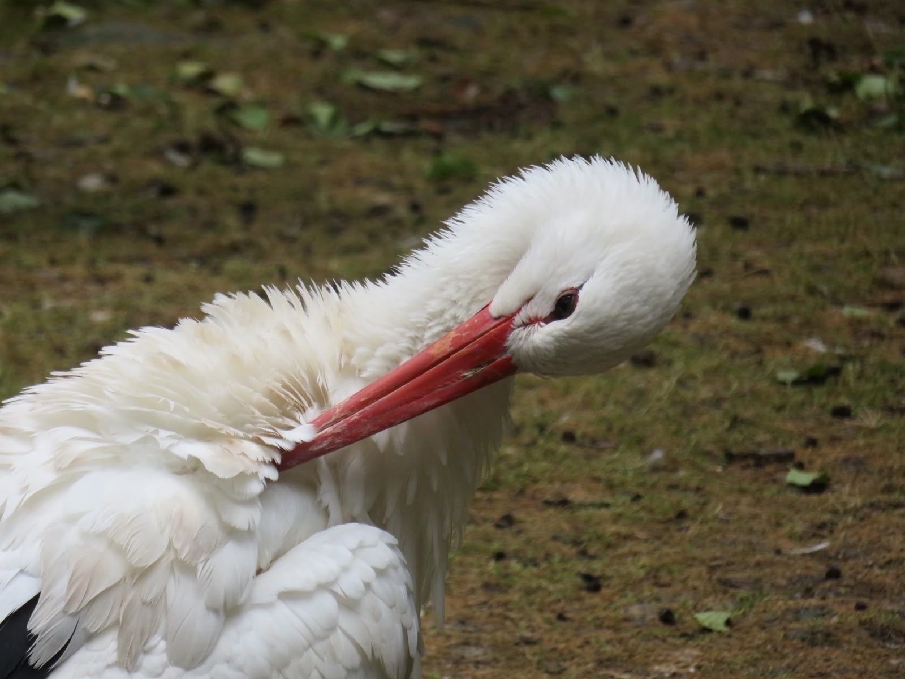
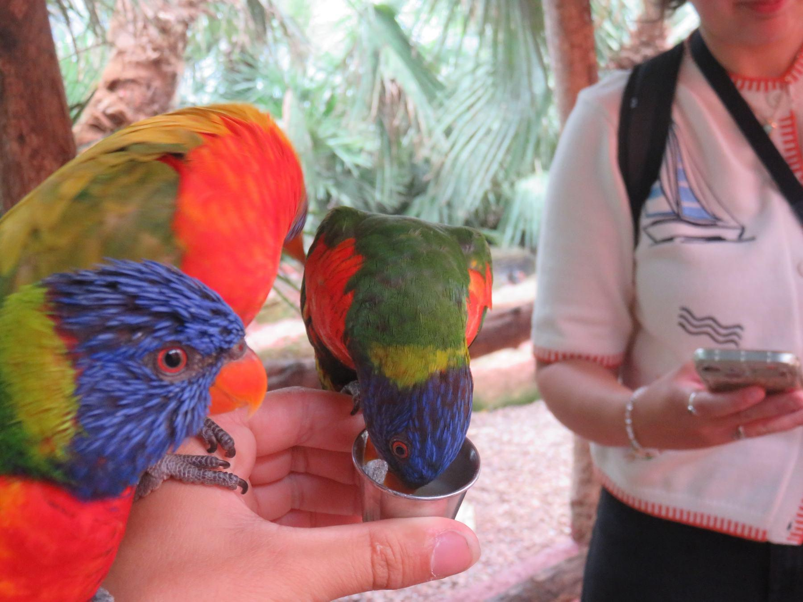
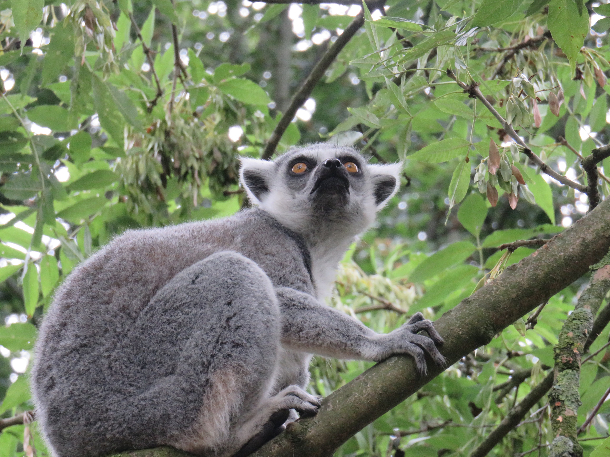
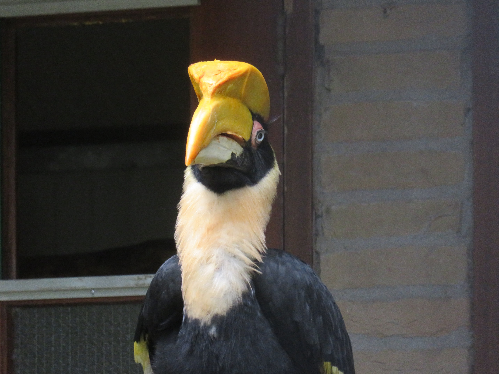
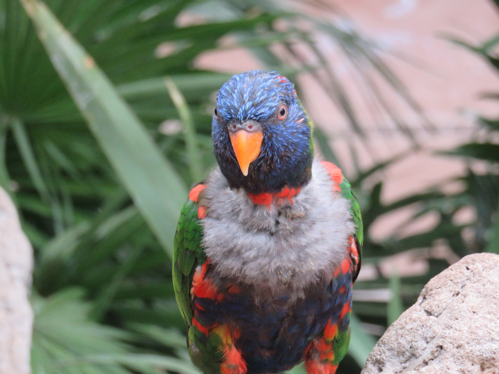

Selected moments
Art gallery
Some of the images, textures, and scenes that inspire my visual language and creative process.





Selected moments
Some of the images, textures, and scenes that inspire my visual language and creative process.




